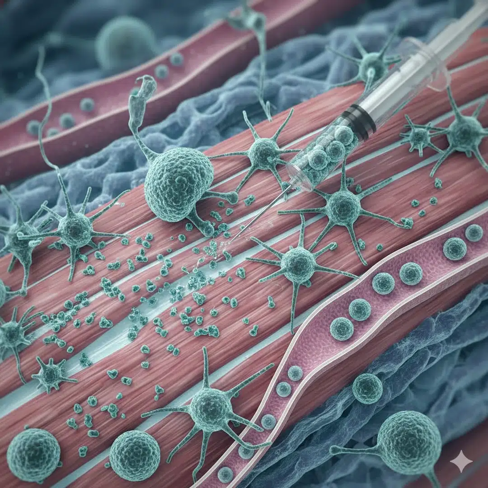
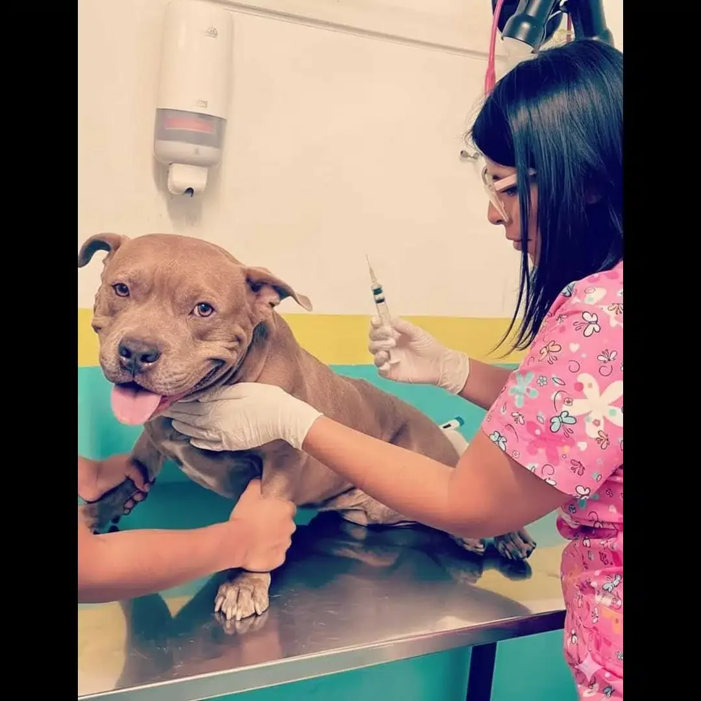

Serología antirrábica — intervalo de 30 días post-primovacunación: fundamento inmunológico y regulatorio
Zoovet Travel — Unidad Clínica Veterinaria y Asesoría en Exportación Internacional, Perú
Correspondence: mv.jcamachog@zoovettravel.com
Zoovet Technical Series — Volume I — 2025¿Por qué la prueba de serología de rabia (FAVN o RFFIT) debe realizarse al menos 30 días después de la vacuna antirrábica?
La prueba de serología de rabia se realiza mediante la FAVN (Fluorescent Antibody Virus Neutralization, Cliquet, Aubert & Sagné, 1998) o la RFFIT (Rapid Fluorescent Focus Inhibition Test, Smith, Yager & Baer, 1973). El intervalo mínimo de 30 días entre la vacuna antirrábica y la toma de muestra no es una recomendación: es un piso regulatorio obligatorio explícito en los marcos de mayor exigencia mundial — Reglamento (UE) n.° 576/2013, CDC/USDA 42 CFR Part 71 (en vigor desde agosto de 2024), APHA del Reino Unido, DAWR de Australia y AQS de Japón.
La confusión más frecuente: la vacuna adquiere validez administrativa a los 21 días — ese plazo es documental, no biológico. Los 30 días son el punto donde la cinética de seroconversión post-primovacunación minimiza el riesgo de resultado falso negativo (Crozet et al., 2024; Wallace et al., 2017). En Zoovet Travel trabajamos con el Rabies Laboratory de Kansas State University (KSVDL), laboratorio acreditado por OIE/WOAH, desde 2013 — más de 13 años de protocolos documentados cuyos resultados son aceptados en todos los destinos citados.
La rabia permanece como una zoonosis de distribución global con una tasa de letalidad próxima al 100 % una vez establecidos los signos clínicos (OMS, 2023). Su control en la interfaz humano-animal depende críticamente de la vacunación masiva de la población canina —el principal reservorio y vector de transmisión a nivel mundial (Hampson et al., 2015). En el contexto de la globalización y del aumento sostenido del movimiento internacional de animales de compañía, la verificación serológica del estado inmune frente a la rabia se ha convertido en un requisito sanitario ineludible para el acceso a múltiples mercados de destino, generando un panorama regulatorio de complejidad técnica y jurídica significativa.
Las pruebas de neutralización viral (VNT) —ya sea el Rapid Fluorescent Focus Inhibition Test (RFFIT) o el Fluorescent Antibody Virus Neutralisation test (FAVN)— constituyen el estándar internacional de referencia para la cuantificación de anticuerpos neutralizantes contra el virus de la rabia (rVNA). El umbral de ≥ 0,5 UI/mL es universalmente reconocido como el correlato de protección aceptable por la WOAH (antes OIE), la Unión Europea y los Estados Unidos (WOAH, 2023; Cliquet et al., 1998; CDC, 2024). La validez científica y operativa de este umbral depende, sin embargo, del momento en que se extrae la muestra en relación con la vacunación: la cinética de anticuerpos post-primovacunación determina críticamente la probabilidad de obtener un resultado serológico válido y reproducible.
Existe una distinción fundamental —y frecuentemente subestimada— entre dos conceptos regulatorios y biológicos que operan en posiciones temporales distintas:
No son el mismo concepto y no deben confundirse. El presente artículo hace de esta distinción su núcleo estructural. Su objetivo es sintetizar los textos regulatorios que exigen el intervalo de 30 días para el muestreo, la evidencia inmunológica que explica por qué existe tal requisito, y articular un modelo operativo de mitigación de riesgo para los médicos veterinarios que gestionan exportaciones internacionales de mascotas (prueba serológica de rabia para viaje internacional; movimiento de animales de compañía).
El argumento más robusto a favor del intervalo de 30 días para el muestreo no es la preferencia biológica —es un requisito regulatorio en los marcos de importación más exigentes del mundo. Esta sección documenta los textos regulatorios principales.
En las jurisdicciones de mayor exigencia que requieren una prueba de título de anticuerpos contra la rabia (VNT), la muestra de sangre debe extraerse al menos 30 días después de la primovacunación. No es una guía ni una recomendación: es una condición legal explícita cuya violación descalifica el resultado serológico.
El principal instrumento legislativo de la UE que rige el movimiento no comercial de animales de compañía desde países terceros es el Reglamento (UE) n.º 576/2013 del Parlamento Europeo y del Consejo. Sus requisitos, operativizados mediante el Reglamento Delegado (UE) 2020/692 y el Reglamento de Ejecución (UE) 2021/404, especifican lo siguiente para perros, gatos y hurones de países no listados (como Perú):
«La prueba debe realizarse sobre una muestra recolectada por un veterinario autorizado al menos 30 días después de la fecha de vacunación y no menos de tres meses antes de la fecha de movimiento.» — Comisión Europea, portal Food Safety: Non-commercial movement from non-EU countries (implementando Reg. 576/2013 / Del. Reg. 2020/692)
El portal Your Europe de la UE aclara además la lógica operativa que distingue los dos intervalos: «Después de esta primera o primovacunación, debe esperar al menos 21 días antes de viajar con su mascota. Esto garantiza que su mascota ha desarrollado la inmunidad necesaria contra la rabia. [...] En el caso de una primera o primovacunación, debe esperar 30 días después de que se haya completado la primovacunación antes de que pueda realizarse esta prueba [VNT]» (Comisión Europea, Your Europe, 2024).
Esta estructura de doble intervalo explícita en la normativa de la UE —21 días para validez de viaje; 30 días antes de poder extraer la muestra serológica— constituye la confirmación regulatoria más autorizada de la distinción central de esta revisión. El periodo de espera de 3 meses tras un resultado de título positivo antes del movimiento es adicionalmente exigido para animales de países terceros no listados.
Consecuencia operativa para Perú: Un perro exportado desde Perú a la UE debe tener su muestra de sangre extraída no antes del día 30 post-primovacunación. Una muestra extraída en el día 21 o 25 no cumpliría el requisito legal de la UE, independientemente del resultado de título obtenido.
El CDC revisó sustancialmente sus normas de importación canina, vigentes desde el 1 de agosto de 2024. Para perros vacunados en el extranjero procedentes de países de alto riesgo —categoría que incluye a Perú—, los requisitos son explícitos:
«Un veterinario debe extraer la muestra de sangre al menos 30 días después de la primera vacunación antirrábica válida del perro y al menos 28 días antes del ingreso a los Estados Unidos.» — CDC, Entry Requirements for Foreign-Vaccinated Dogs from High-Risk Countries (2024). https://www.cdc.gov/importation/dogs/foreign-vaccinated-high-risk-countries.html
El CDC especifica además el escenario de refuerzo: «Si ocurrió un lapsus [en la cobertura vacunal], la muestra debe extraerse al menos 30 días después de la administración de la nueva dosis vacunal» (CDC, 2024). Los perros sin un resultado serológico válido deben someterse a una cuarentena de 28 días en una instalación de atención animal registrada en el CDC —una consecuencia operativa y financiera significativa por incumplimiento.
Las normas del CDC distinguen también entre escenarios de primovacunación y refuerzo de forma relevante para el profesional:
Tras el Brexit, el Reino Unido implementó su propio Pet Travel Scheme bajo la autoridad del APHA. Para perros de países terceros clasificados como que requieren prueba de título, la muestra de sangre para la prueba serológica de rabia debe tomarse al menos 30 días después de una vacunación antirrábica válida. El periodo de espera pre-viaje de 3 meses tras un resultado de título positivo aplica también para animales de la mayoría de países terceros, incluido Perú (APHA, 2024).
Australia opera uno de los sistemas de bioseguridad para mascotas más restrictivos del mundo, coherente con su estatus libre de rabia. El Departamento de Agricultura, Agua y Medio Ambiente (DAWR) exige dos resultados VNT ≥ 0,5 UI/mL de laboratorios aprobados, con la primera muestra de sangre recolectada no antes de 30 días después de la primovacunación. El segundo título positivo debe ir seguido de un periodo de espera pre-viaje mínimo de 180 días. Los animales deben además completar un periodo de cuarentena a la llegada (DAWR, 2024).
El AQS de Japón exige dos pruebas de título separadas ≥ 0,5 UI/mL (por RFFIT o FAVN, laboratorio designado) con la primera extracción de sangre no antes de 30 días post-primovacunación. Un periodo de espera mínimo de 180 días tras el segundo título positivo aplica antes del ingreso, y los perros deben haber sido vacunados al menos 91 días antes de la llegada a Japón (AQS/MAFF, 2023).
La Canadian Food Inspection Agency (CFIA) aplica normas comparativamente menos restrictivas para perros de la mayoría de países. La prueba de título no está universalmente exigida como condición de ingreso; sin embargo, se requiere documentación vigente y válida de vacunación antirrábica. Cuando se requieren resultados de título (escenarios específicos de país de origen), el intervalo de muestreo de 30 días post-vacunación se alinea con los mismos principios aplicados por otros marcos de alta exigencia (CFIA, 2024).
El Código Terrestre de Sanidad Animal de la WOAH (2023), capítulos 8.14/8.15, establece para la importación de perros, gatos y hurones desde países con infección por el virus de la rabia que los animales deben someterse a una prueba de titulación de anticuerpos no menos de 3 meses y no más de 12 meses antes del embarque. El estándar WOAH especifica ≥ 0,5 UI/mL (RFFIT o FAVN) como criterio de aceptación, y el Manual de Pruebas de Diagnóstico y Vacunas para Animales Terrestres de la WOAH (13.ª ed., 2024) proporciona los protocolos técnicos para laboratorios de referencia acreditados. El marco WOAH no especifica explícitamente el intervalo de muestreo de 30 días post-vacunación del mismo modo que los textos de la UE y el CDC; establece la prueba de título como requisito pertinente y remite a las normativas nacionales de aplicación para los plazos operativos.
SENASA Perú ha implementado la plataforma digital «Viaja con tu mascota» para la gestión del Certificado Sanitario de Exportación (CSE). La plataforma aplica un modelo adaptativo al destino: los requisitos de serología antirrábica e intervalos de muestreo siguen las normas del país de destino (SENASA, 2024). Para exportaciones a la UE, RU, EE. UU., Australia o Japón, el requisito de muestreo de 30 días del país de destino aplica en su totalidad. MAPA Brasil, SAG Chile e ICA Colombia adoptan marcos adaptativos al destino equivalentes sin establecer umbrales nacionales más restrictivos.
| Jurisdicción | Validez administrativa (primovacunación) | Intervalo mínimo obligatorio de muestreo (VNT) | Umbral VNT | Periodo de espera pre-movimiento post-título | Referencia legal/oficial principal |
|---|---|---|---|---|---|
| Unión Europea | ≥ 21 días post-primovacunación | ≥ 30 días post-vacunación (requisito legal explícito) | ≥ 0,5 UI/mL (RFFIT o FAVN; laboratorio aprobado) | ≥ 3 meses desde la fecha de muestra antes del movimiento (países terceros no listados) | Reg. (EU) No 576/2013; Del. Reg. (EU) 2020/692; Impl. Reg. (EU) 2021/404 |
| Reino Unido | 21 días (UK Pet Travel Scheme) | ≥ 30 días post-vacunación | ≥ 0,5 UI/mL | ≥ 3 meses desde la fecha de muestra (la mayoría de países terceros) | APHA UK Pet Travel Rules (2024) |
| Estados Unidos (CDC/USDA) | Sin concepto de validez independiente; serología exigida para países de alto riesgo | ≥ 30 días post-primera vacunación válida; ≥ 28 días antes del ingreso a EE. UU. | ≥ 0,5 UI/mL (solo laboratorio aprobado por CDC) | ≥ 28 días desde muestra hasta ingreso; título válido de por vida si no hay lapsus de cobertura | CDC Dog Import Requirements 2024; 42 CFR 71.51 |
| Australia (DAWR) | 21 días | ≥ 30 días post-primovacunación (1.ª de 2 muestras requeridas) | ≥ 0,5 UI/mL (2 pruebas requeridas; laboratorio aprobado) | ≥ 180 días tras 2.º título positivo + cuarentena a la llegada | DAWR BICON Import Conditions (2024) |
| Japón (AQS/MAFF) | ≥ 91 días antes de la llegada | ≥ 30 días post-primovacunación (1.ª de 2 muestras requeridas) | ≥ 0,5 UI/mL (2 pruebas requeridas; laboratorio designado) | ≥ 180 días tras 2.º título positivo; cuarentena a la llegada | AQS/MAFF Provisional Measures (2023) |
| Canadá (CFIA) | Vacunación vigente y válida | No exigido universalmente; intervalo de 30 días cuando se requiere título | ≥ 0,5 UI/mL cuando aplica | Variable según país de origen | CFIA Health of Animals Regulations (2024) |
| WOAH | Según fabricante; implementación nacional | Prueba ≥ 30 días post-vacunación (implementación regulatoria nacional) | ≥ 0,5 UI/mL (RFFIT o FAVN) | 3 meses antes del embarque (post-título) | TAHC 2023, Chapter 8.14/8.15; Terrestrial Manual 13th ed. 2024 |
| Perú (SENASA) | Según fabricante; vacunación certificada requerida | Según país de destino (mínimo 30 días para UE/EE. UU./RU/AU/JP) | Según destino; ≥ 0,5 UI/mL cuando se requiere | Según país de destino | SENASA — Viaja con tu mascota platform (2024) |
| Nota: VNT = prueba de neutralización viral; UI/mL = unidades internacionales por mililitro; RFFIT = Rapid Fluorescent Focus Inhibition Test; FAVN = Fluorescent Antibody Virus Neutralisation test. Los «países terceros no listados» en el contexto de la UE incluyen a Perú. | |||||

Las vacunas antirrábicas veterinarias autorizadas son prácticamente de forma exclusiva preparados de virus inactivado con adyuvante. Su mecanismo de acción requiere la captación del antígeno por células presentadoras de antígeno profesionales (células dendríticas, macrófagos), presentación a linfocitos T CD4+ en el contexto de moléculas de MHC de clase II, y la consecuente activación de linfocitos B específicos (Day, 2007; Tizard, 2021). Este proceso desencadena una respuesta inicial de anticuerpos IgM, seguida de maduración de afinidad y cambio de clase a IgG, que constituye la fracción medida por los ensayos VNT estándar.
La respuesta inmune primaria se caracteriza por una latencia inicial de varios días antes de que los primeros anticuerpos séricos sean detectables. En perros primovacunados, la mayoría de estudios documentan una ventana de seroconversión entre los días 7 y 14 post-vacunación en respondedores altos (Kennedy et al., 2007; Berndtsson et al., 2011; Wallace et al., 2017). Sin embargo, la maduración de la respuesta y la consolidación de títulos séricos reproducibles en la población requieren tiempo adicional: el día 30 representa el punto de máxima convergencia de las respuestas individuales en las cohortes documentadas.
La respuesta inmune secundaria (desencadenada por una vacunación de refuerzo posterior) es cualitativamente diferente: latencia más corta, mayor magnitud y mayor durabilidad, mediada por células B y T de memoria generadas durante la respuesta primaria (Day, 2007; Tizard, 2021). Esta distinción explica por qué los animales previamente vacunados alcanzan títulos protectores de forma más rápida y fiable que los primovacunados —y informa directamente la interpretación de los intervalos regulatorios de muestreo para cada escenario.
La evidencia de estudios de cinética sometidos a revisión por pares debe interpretarse con precisión metodológica. Los hallazgos clave relevantes para el intervalo de 30 días son:
Es el análisis a mayor escala de resultados serológicos de primovacunación antirrábica disponible. Los resultados demostraron que las tasas de fracaso (título < 0,5 UI/mL) fueron más bajas cuando el intervalo de extracción fue entre 8 y 30 días (rango de tasa de fracaso: 3,1 %–9,1 % en toda esa ventana). La GMT mostró una asociación parabólica inversa: más baja para intervalos de extracción muy cortos (días 0–3), más alta para intervalos moderados, y descendente para intervalos más largos. Críticamente, las muestras extraídas a los 3 días tuvieron tasas de fracaso dramáticamente más altas; las muestras en la ventana de 8–30 días actuaron consistentemente mejor. La contribución del estudio es documentar el riesgo de muestrear demasiado pronto y confirmar que la ventana de 8–30 días captura el mejor periodo de respuesta poblacional para la primovacunación.
Este estudio aporta el modelado probabilístico más reciente y operativamente relevante. Agrupando datos de múltiples estudios de campo, reporta la probabilidad de que un perro alcance ≥ 0,5 UI/mL en distintos intervalos post-primovacunación. Los autores reportan, para el intervalo de 30–40 días: 1.139 éxitos de 1.279 vacunaciones (89,1 %). El estudio establece explícitamente que «dado que el título de anticuerpos debe evaluarse al menos 30 días después de la primovacunación para cumplir las prescripciones regulatorias, seleccionamos el intervalo de 30–40 días para definir la probabilidad de éxito vacunal». El umbral de 30 días en este trabajo se trata como una restricción regulatoria dada, confirmando además su estatus legal.
Nota sobre intervalos previos en Crozet et al.: Los intervalos anteriores (p. ej., 15–21 días: 148/152 = 97,4 %) parecen numéricamente más altos en proporciones brutas, pero representan conjuntos de datos más pequeños y seleccionados sesgados hacia resultados positivos (estudios de campo que reportan campañas exitosas). El intervalo de 30–40 días opera sobre un conjunto de datos agrupados mucho mayor y representa el rendimiento a nivel poblacional en condiciones reales. Las comparaciones porcentuales directas entre intervalos a partir de estos datos deben hacerse con cautela; la lectura correcta es que el día 30 es el mínimo regulatorio y el punto de referencia inmunológicamente maduro, no que los intervalos anteriores sean superiores en términos absolutos.
Este estudio fundacional documentó que el tamaño del animal, la edad, la raza y el tiempo de muestreo post-vacunación tuvieron todos efectos significativos en las tasas de aprobación y los títulos medianos. Las razas más pequeñas elicitaron niveles de anticuerpos más altos que las razas grandes. Los animales jóvenes (< 1 año) generaron respuestas más bajas que los adultos. La variación del tiempo de muestreo reflejó la cinética esperada de la respuesta primaria —confirmando el fundamento biológico de un periodo de espera post-vacunación adecuado antes del muestreo.
En esta cohorte prospectiva sueca, el 91,9 % de los perros alcanzaron ≥ 0,5 UI/mL en condiciones óptimas. La edad a la vacunación y el número de días desde la vacunación hasta la extracción de muestra mostraron interacción significativa con los resultados. Las razas más grandes tuvieron mayor riesgo de fracaso, pero este riesgo se redujo con dos vacunaciones.
Utilizando RFFIT en los días 0, 30, 180 y 360 post-vacunación en perros de Sri Lanka, este estudio documentó explícitamente la dinámica de seroconversión al día 30. Una proporción significativa de perros jóvenes previamente no vacunados no mantuvieron títulos protectores durante el primer año, subrayando la criticidad del intervalo de seroconversión inicial para fines de certificación regulatoria.
El umbral ≥ 0,5 UI/mL para el título de anticuerpos neutralizantes contra la rabia se estableció sobre la base de estudios de eficacia vacunal que demostraron que los animales con títulos por encima de este nivel estaban protegidos frente al desafío viral experimental (Moore & Hanlon, 2010). Este umbral fue adoptado formalmente por la WOAH e incorporado a los marcos regulatorios de la UE y EE. UU. Moore & Hanlon (2010) revisaron el concepto de anticuerpos específicos contra la rabia como sustitutos de protección, concluyendo que el umbral de 0,5 UI/mL representa un correlato de protección útil a nivel poblacional, aunque animales individuales puedan estar protegidos a títulos más bajos mediante inmunidad celular. Para la certificación regulatoria, sin embargo, el criterio ≥ 0,5 UI/mL medido por RFFIT o FAVN en un laboratorio aprobado es el único estándar objetivamente cuantificable y reproducible disponible.
Smith et al. (2021) demostraron que los perros sanos tienen alta probabilidad de satisfacer este requisito entre los días 8 y 30 post-vacunación cuando se administran vacunas antirrábicas de alta potencia, y que el punto de día 30 post-vacunación optimiza la probabilidad de una respuesta robusta satisfaciendo al mismo tiempo los requisitos regulatorios para los escenarios de riesgo Tipo A y Tipo B (véase sección 5).
La respuesta de anticuerpos a la primovacunación antirrábica en perros está sujeta a una variabilidad interindividual documentada impulsada por: tamaño corporal (Kennedy et al., 2007; Berndtsson et al., 2011); edad a la vacunación —los cachorros < 16 semanas muestran GMT más baja debido a interferencia de anticuerpos maternos (Wallace et al., 2017); formulación vacunal y adyuvante (Jakel et al., 2008); vía de administración; estado nutricional y de salud; enfermedad inmunosupresora concomitante; y competencia inmune genética del huésped (Kennedy et al., 2007). Esta variabilidad biológica es la explicación mecanicista de por qué existe el mandato regulatorio de ≥ 30 días: proporciona tiempo suficiente para que incluso los animales respondedores lentos alcancen un título medible y reproducible, reduciendo la tasa de resultados serológicos inválidos en el primer intento en la población.
La confusión de estos dos intervalos regulatorios distintos constituye el error conceptual de mayor consecuencia encontrado en la práctica veterinaria clínica orientada a la exportación internacional de mascotas. La evidencia revisada en las secciones 2 y 3 permite una caracterización precisa y operativamente inequívoca de cada uno:
21 días post-primovacunación establece cuándo una vacunación se vuelve legalmente efectiva para fines documentales. El Reglamento (UE) n.º 576/2013 especifica que «el periodo de validez de la vacunación comienza no menos de 21 días desde la finalización del protocolo de vacunación para la primovacunación» (Comisión Europea, portal Food Safety, 2024). Este intervalo determina si un animal puede considerarse «vacunado» en el sentido administrativo-legal.
30 días post-primovacunación establece la fecha más temprana en la que puede extraerse legalmente una muestra de sangre para la VNT con fines de la UE, CDC, RU, Australia y Japón. Es el mínimo regulatorio para el muestreo serológico —no una preferencia biológica. El muestreo antes de esta fecha hace inadmisible el resultado serológico conforme a la normativa de la UE y las normas CDC/USDA, independientemente del título obtenido.
La evaluación de riesgo de la EFSA (2022) de la Comisión Europea, encargada para evaluar la viabilidad de reducir el periodo de espera post-título de 90 a 30 días, modeló explícitamente el punto de muestreo de 30 días post-vacunación como la línea base regulatoria para sus cálculos cuantitativos de riesgo. El informe señaló que el riesgo de introducción de rabia está asociado con la ventana de susceptibilidad entre la vacunación y el desarrollo de inmunidad (21 días), pero sus modelos de riesgo asumieron ≥ 30 días post-vacunación como el punto temporal de muestreo legítimo más temprano —tratando esto como un dado regulatorio establecido, no una recomendación opcional.
La consecuencia práctica de esta distinción es directa: un animal técnicamente válido bajo las normas administrativas (vacunado hace > 21 días) cuya sangre se extraiga en el día 22 o 26 producirá un resultado serológico legalmente inadmisible en la UE y bajo las normas CDC/USDA. El protocolo necesitaría reiniciarse desde el paso de muestreo, no desde la vacunación —pero el retraso de semanas o meses en el cronograma de exportación es el costo operativo concreto.
La Ficha Técnica (SmPC) de Rabisin® (Boehringer Ingelheim) es la más explícita entre los fabricantes respecto al intervalo de 30 días: establece que la inmunidad se demuestra 1 mes (30 días) después de la primovacunación, con duración de inmunidad que se extiende hasta 3 años tras el primer refuerzo anual (Boehringer Ingelheim, 2024). Esta declaración del fabricante proporciona corroboración farmacológica directa del umbral regulatorio: el producto está certificado para demostrar inmunidad protectora a los 30 días, no a los 21.
Nobivac® Rabies especifica que una respuesta serológica adecuada (≥ 0,5 UI/mL) se demuestra en perros y gatos entre 2 y 3 semanas (14–21 días) post-vacunación en condiciones de estudio controladas, con niveles máximos de anticuerpos típicamente alcanzados alrededor de las 3 semanas en respondedores altos (MSD Animal Health, 2023). Estos datos describen el inicio más temprano de inmunidad detectable en condiciones de estudio óptimas, no el punto de muestreo óptimo a nivel poblacional. La recomendación del fabricante de vacunar al menos 21 días antes del viaje no establece el día 21 como el momento óptimo de muestreo serológico.
Defensor® (Zoetis) recomienda primovacunación desde los 3 meses de edad, refuerzo anual y posterior revacunación trienal según normativa local (Zoetis, 2023). La SmPC documenta eficacia frente a desafío experimental. La compatibilidad con los requisitos serológicos internacionales debe evaluarse según el marco regulatorio del país de destino.
Rabigen® Mono (Virbac) especifica inicio de inmunidad a las 3 semanas post-primovacunación, coherente con el umbral administrativo de 21 días (Virbac, 2023). Como con Nobivac®, esto describe el inicio más temprano en estudios de eficacia controlados, no el punto temporal óptimo ni legalmente exigido para el muestreo.
La lectura convergente de los datos de fabricantes es: las cuatro SmPC principales de vacunas confirman inicio de inmunidad detectable a los 21 días (validez administrativa). Boehringer Ingelheim certifica explícitamente inmunidad demostrada a los 30 días —alineándose precisamente con los requisitos regulatorios de muestreo de la UE, CDC, RU, Australia y Japón.
La evidencia revisada permite construir un modelo de mitigación de riesgo dual aplicable al manejo clínico de perros destinados al movimiento internacional. Smith et al. (2021) formalizaron las dos categorías de riesgo relevantes para la ventana regulatoria de muestreo:
El animal fue infectado con RABV antes, o en la ventana post-vacunación inmediata antes del desarrollo de inmunidad. Los perros en incubación de rabia en el momento de la vacunación manifestarán signos clínicos dentro del periodo de 30 días post-vacunación y no serán presentados para exportación. Un periodo de espera de 30 días es suficiente para excluir este escenario con alta certeza (Smith et al., 2021).
El animal no ha alcanzado el umbral ≥ 0,5 UI/mL en el momento del muestreo, debido a respuesta primaria lenta, interferencia de anticuerpos maternos, enfermedad concomitante o variabilidad interindividual. La probabilidad de este riesgo disminuye significativamente cuando el muestreo se realiza en la ventana de 28–30 días frente a intervalos más tempranos (Wallace et al., 2017; Crozet et al., 2024).
El mínimo regulatorio de 30 días aborda simultáneamente ambos tipos de riesgo: elimina el riesgo Tipo A al proporcionar la ventana necesaria de exclusión por incubación, y minimiza el riesgo Tipo B al permitir que la respuesta inmune primaria alcance su meseta más probable a nivel poblacional.
Este cronograma hace explícito que el intervalo de muestreo de 30 días post-vacunación es el nodo habilitador crítico de toda la secuencia de certificación de exportación internacional. Cualquier acortamiento de este intervalo —por mínimo que sea— no produce simplemente un resultado más temprano: produce un resultado inadmisible conforme a la normativa de la UE y del CDC, exigiendo reinicio completo del protocolo desde la etapa de muestreo.
La arquitectura argumental de esta revisión invierte deliberadamente el encuadre encontrado en literatura veterinaria previa, donde el intervalo de 30 días se presentaba principalmente como una preferencia inmunológica derivada de estudios de cinética de anticuerpos. La jerarquía probatoria es la opuesta: el intervalo de 30 días es ante todo un requisito regulatorio obligatorio en la UE (texto legislativo primario: Reg. 576/2013), en EE. UU. (normas CDC vigentes desde el 1 de agosto de 2024), en el RU (APHA Pet Travel Scheme), en Australia (DAWR BICON) y en Japón (AQS/MAFF). La evidencia inmunológica —particularmente Wallace et al. (2017), Crozet et al. (2024), Smith et al. (2021) y Kennedy et al. (2007)— proporciona la justificación biológica de por qué los reguladores convergieron en este intervalo. Ambas columnas son necesarias para un relato completo, pero confundirlas o invertir su jerarquía crea una posición técnicamente vulnerable a crítica regulatoria o inmunológica.
La evaluación de riesgo de la EFSA de 2022 es ilustrativa al respecto. Encargada para evaluar si el periodo de espera post-título de 90 días (no el intervalo de muestreo de 30 días post-vacunación) podría reducirse a 30 días, el informe modeló el punto de muestreo de 30 días post-vacunación como la línea base regulatoria establecida a partir de la cual se realizaron los cálculos de riesgo. La EFSA (2022) concluyó que, aunque un periodo de espera post-título de 30 días es inmunológicamente defendible (como la Comisión Científica de la OIE había avalado previamente), el aumento resultante en la probabilidad de introducir rabia en la UE —de un máximo de 5 a 20 perros infectados en un periodo de 20 años— se consideró desproporcionado en el contexto del programa de erradicación de la rabia de la UE. Este hallazgo demuestra que el requisito de muestreo de 30 días post-vacunación y el periodo de espera post-título son dos elementos regulatorios distintos que operan sobre riesgos biológicos diferentes, y que reforzar uno no compensa la relajación del otro.
La asimetría interjurisdiccional revelada por el análisis regulatorio comparativo es también analíticamente significativa. Toda jurisdicción que exige el VNT como condición de ingreso (UE, RU, EE. UU., Australia, Japón) ha llegado independientemente al mínimo de muestreo de 30 días post-vacunación. Canadá, que no exige universalmente la prueba de título, no ha necesitado formalizar este umbral de la misma manera, pero la ausencia de una norma más estricta no constituye evidencia contra el estándar de 30 días —refleja un enfoque diferente de clasificación de riesgo.
Una limitación de esta revisión, coherente con su diseño descriptivo-regulatorio, es la heterogeneidad de los estudios inmunológicos primarios referenciados. Kennedy et al. (2007), Wallace et al. (2017) y Berndtsson et al. (2011) se realizaron predominantemente en contextos clínicos europeos y norteamericanos. Los datos específicos de Latinoamérica sobre cinética de primovacunación en perros en condiciones de campo representativas de Perú permanecen limitados en la literatura indexada. Esta brecha no socava la universalidad de los mecanismos inmunológicos subyacentes, pero representa una dirección productiva para investigación futura —particularmente dado el número de animales de compañía exportados anualmente desde Perú hacia destinos de alta exigencia.
Las siguientes conclusiones, cada una fundamentada en textos regulatorios primarios o evidencia indexada sometida a revisión por pares, definen la posición basada en evidencia sobre el intervalo de 30 días post-primovacunación antirrábica:
Conflictos de interés: Los autores declaran no tener conflicto de interés en relación con el contenido de este artículo.
Financiamiento: Este trabajo no recibió financiamiento externo. Fue desarrollado en el marco de las actividades técnicas de Zoovet Travel.
Política bibliográfica: Se priorizan referencias de los 15 años precedentes. Las referencias metodológicas fundacionales (p. ej., prueba FAVN; Cliquet et al., 1998) y los instrumentos regulatorios seminales se incluyen con independencia de la fecha de publicación, dado su papel constitutivo en el marco regulatorio internacional, coherente con la práctica estándar en revisiones veterinarias técnico-regulatorias.

Relacionado en esta serie
Fallo FAVN y Reconversión en Weimaraner: Reporte de Caso D1/D15/D30 (KSVDL, 2026) — Vol. XVIII. Primer reporte de caso FAVN fallo/reconversión publicado en acceso abierto con identificadores KSVDL verificables desde América Latina. 0.22 → ≥3.46 UI/mL. DOI: 10.5281/zenodo.20533499